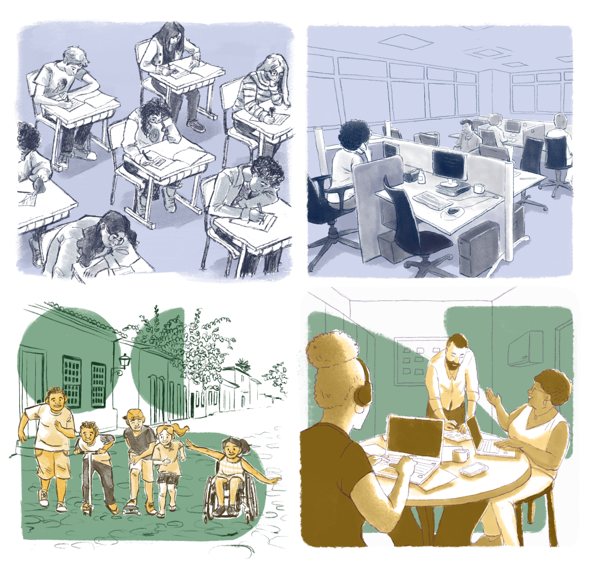
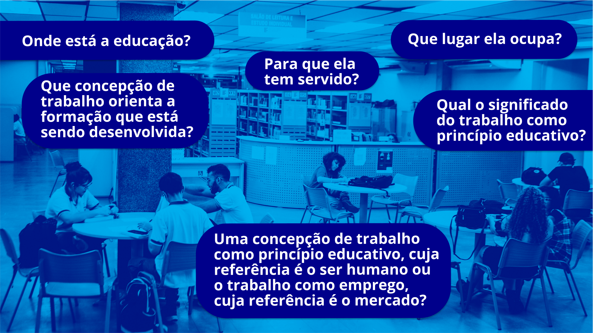

As dimensões do trabalho na EPT brasileira
Se o trabalho é fundamento constitutivo do ser humano, real, social, criativo e histórico – o ser da prática –, porque ele também o desumaniza? Essa problemática também é levantada por Machado (2023, p. 7) quando discute sobre o trabalho como referência para a formação humana e a democracia. A autora apresenta a seguinte questão:
[...] se o trabalho pode ser alienante e embrutecedor, como ser formador, humanizador e de conquista democrática?
Saviani (2007) nos fala que o trabalho e a educação são especificidades humanas e são indissociáveis, pois, à medida que o ser humano trabalha e cria, ele se educa e educa. Ele aprende o fazer e tem capacidade de transmitir esse saber.
Com o modo de produção capitalista, centrado no consumo e na troca de mercadorias com a intenção de gerar valor, verifica-se a separação entre trabalho e educação, bem como entre o trabalho intelectual e o trabalho manual, constituindo, assim, dois tipos de escola:
[...] a proposta dualista de escolas profissionais para os trabalhadores e “escolas de ciências e humanidades” para os futuros dirigentes; e a proposta de escola única diferenciada, que efetuava internamente a distribuição dos educandos segundo as funções sociais para as quais se os destinavam em consonância com as características que geralmente decorriam de sua origem social.
A EPT no Brasil nasce marcada por essa dualidade: uma escola destinada às classes abastadas e outra destinada aos trabalhadores para o desenvolvimento do trabalho manual e funcionamento da estrutura de (re)produção do capital, bem como a manutenção de privilégios de classe.
Mészáros (2008), em seu livro Educação Para Além do Capital, faz a seguinte reflexão: “Diga-me onde está o trabalho em uma determina sociedade, e eu te direi onde está a educação”. Ou seja, a organização do trabalho e como ele se configura em uma determinada sociedade implica diretamente o modelo de educação e os processos educativos daquela sociedade.

Título: A influência do trabalho na educação e da educação no trabalho
Fonte: Prosa (2024a).
Para refletir: contrastando o trabalho e a educação
Observemos em nossa sociedade, comunidade e no território em que vivemos: onde está o trabalho? Quais são esses tipos de trabalho? Quem vende a força de trabalho e quem controla o trabalho? Como é a organização do trabalho? É um trabalho hierarquizado e regulamentado? Que tipo de gente esse trabalho produz? Esse trabalho humaniza ou desumaniza?
A partir daí podemos olhar para a escola, para a educação.

Título: Onde está a educação
Fonte: Ministério da Educação (2024).
Elaboração: Prosa (2024).
Podemos fazer esse exercício de observação e de anotação e dialogar com os colegas, construindo um panorama do trabalho e da educação. Não se esqueça de registrar sua reflexão no seu Memorial ou de seguir as orientações do tutor do curso.